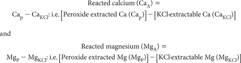
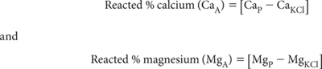

The determination of Ca2+ and Mg2+ is another means by which acid neutralising capacity in soils may be estimated. The method assumes that the extra Ca2+ and Mg2+ dissolved during peroxide oxidation/digestion compared to that soluble in a 1 M KCl extract (i.e. reacted Ca and Mg) can be used as a surrogate to estimate the acid neutralising capacity of actual and potential ASS (Ahern and McElnea 2004). Relevant terms are:

Levels of CaA and MgA reflect the amounts of ‘insoluble’ Ca and/or Mg carbonates, oxides and hydroxides dissolved by the acid generated by the oxidation of sulfides in peroxide digests. In soils with excess carbonates, CaA and MgA may underestimate actual carbonate contents unless the HCl-back titration procedure in SPOCAS has been performed. These Ca2+ and Mg2+ values can be converted to equivalent acid neutralising capacity (e.g. a-CaA) assuming two moles of neutralising is provided per mole of Ca and Mg, respectively.
For individual samples, collate relevant input values (Cap and Mgp) from Method 20E1 and (CaKCl and MgKCl) from Method 20D1 in units of percent (%) on an oven-dry (85°C) basis. It is assumed that two moles of neutralising is provided per mole of Ca and Mg, respectively. Factors to convert to % CaCO3 equivalent (oven-dry) are 2.497 and 4.117 for % Ca and % Mg.

Report % CaA and % MgA on an oven-dry (85°C) basis.